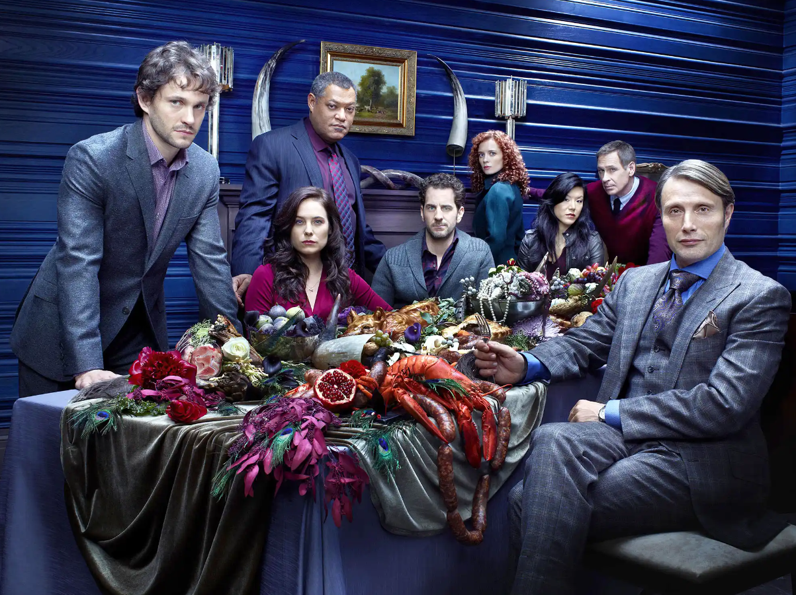

Odin Recipes & More by Dakkar
Delicacies both gastral and visual. Explore to discover new delights
to try, art to savour and ponder, and some basic plebian culinary favorites.

Offerings Gastral
- Main Courses
- Side Dishes
- Plebian Favorites
Offerings Visual
- Centerpeices and Decor to Inspire